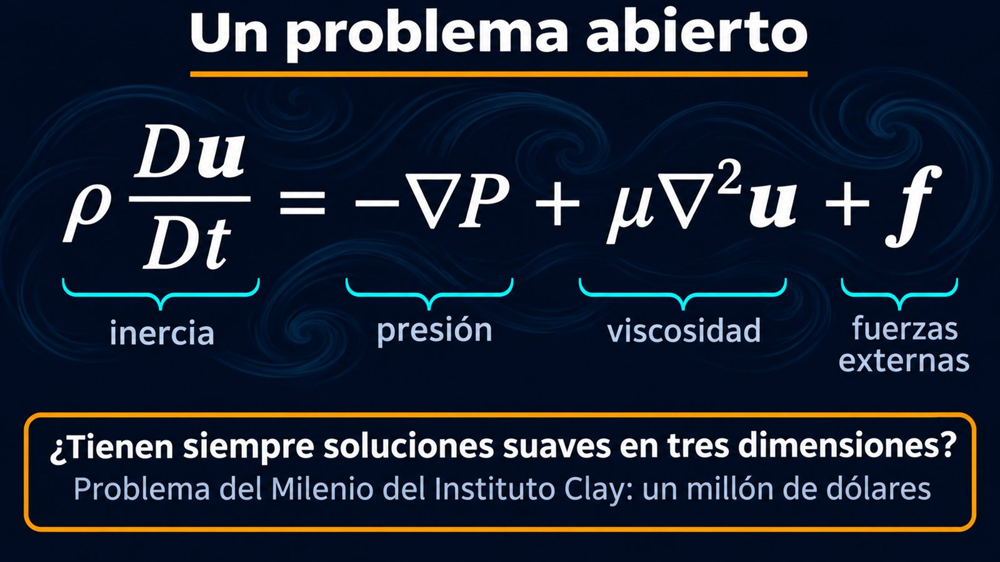

La ecuación de Euler más la fricción interna, y una pregunta que vale un millón de dólares

Si toda la mecánica de fluidos tuviera que caber en una línea, sería esta: las ecuaciones de Navier-Stokes. Describen el humo de un cigarrillo, el agua de un río, el aire alrededor de un avión y la sangre en las arterias. Y, a casi dos siglos de su descubrimiento, todavía nadie sabe responder una pregunta básica sobre ellas.
La ecuación de Euler es la segunda ley de Newton para un fluido ideal. Le falta un ingrediente que, según David Tong, de la Universidad de Cambridge, resulta ser muy importante: la fricción interna del fluido, la viscosidad [1]. Tong argumenta qué forma tiene que tener esa fuerza [1]:
Sumando ese término a la ecuación de Euler se obtienen las ecuaciones de Navier-Stokes [1]:
El cociente ν = μ/ρ aparece tan seguido que tiene nombre propio: la viscosidad cinemática [1].
y además ∇ · u = 0, si el fluido es incompresible
Tong da una imagen útil. Si se miran solo dos términos de la ecuación, el que dice cómo cambia la velocidad con el tiempo y el de la viscosidad, queda una ecuación igual a la del calor [1]. Así como el calor se difunde desde un punto caliente, la viscosidad difunde la cantidad de movimiento: si en una zona el fluido se mueve más rápido, la viscosidad reparte ese movimiento con los alrededores [1].
La fila que se contagia: imaginá una fila de gente tomada del brazo. Si la persona del medio empieza a caminar, arrastra un poco a sus vecinos, que arrastran a los suyos. El movimiento se va repartiendo hacia los costados, cada vez más parejo y más lento. La viscosidad hace eso con la velocidad del fluido.
Con viscosidad aparece una condición de borde que el fluido ideal no tenía: la de no deslizamiento. Sobre una pared, el fluido tiene que moverse con la misma velocidad que la pared [1]. Tong aclara que no sale de la ecuación: es algo que se agrega, que tiene sentido físico por la fricción entre el fluido y la pared y que coincide con la mayoría de los experimentos [1]. Y explica por qué la ecuación de Euler no podía tenerla: es de primer orden en las derivadas, y admite una sola condición de borde; Navier-Stokes es de segundo orden y admite dos [1]. Esa diferencia está detrás de la capa límite y de la solución de la paradoja de d'Alembert.
Según MacTutor, el ingeniero Claude-Louis Navier, conocido en su época como constructor de puentes, dio las ecuaciones para fluidos viscosos en 1822 [2]. Lo hizo sin entender del todo la física: no conocía los esfuerzos de corte en un fluido, y modificó las ecuaciones de Euler teniendo en cuenta las fuerzas entre las moléculas [2]. George Stokes las obtuvo de nuevo con otros supuestos y las publicó en 1845, en un trabajo sobre la fricción interna de los fluidos en movimiento [3]. Cuando las dedujo, descubrió que Navier, Poisson y Saint-Venant ya habían considerado el problema [3].
Tong advierte que, por simples que parezcan, de las ecuaciones de Navier-Stokes falta entender mucho, incluidas las preguntas más básicas sobre si sus soluciones existen y si son únicas [1]. El Instituto de Matemática Clay incluyó la pregunta por la existencia y la suavidad de sus soluciones entre sus siete Problemas del Milenio [4], y destinó un millón de dólares a la solución de cada uno [5].
Por qué cuesta tanto: las ecuaciones son no lineales, por el término de la derivada material en el que el fluido se transporta a sí mismo [1]. Solo en casos muy simples tienen solución exacta: el flujo entre dos placas, el flujo de Couette, y el flujo por un tubo, el flujo de Poiseuille [1]. Para todo lo demás, desde el ala de un avión hasta el clima, se resuelven en computadora.
Las ecuaciones de Navier-Stokes son la ecuación de Euler más la fricción interna del fluido: un término que difunde la cantidad de movimiento y una condición de no deslizamiento en las paredes. Con esas dos piezas aparecen la capa límite, el arrastre y la turbulencia. Y con ellas también, una de las grandes preguntas abiertas de la matemática.
Pregunta para la comunidad: Si la viscosidad difunde la cantidad de movimiento como el calor se difunde, ¿qué esperás que pase con un remolino en un vaso de agua que dejás quieto? ¿Y con el mismo remolino en un vaso de miel?